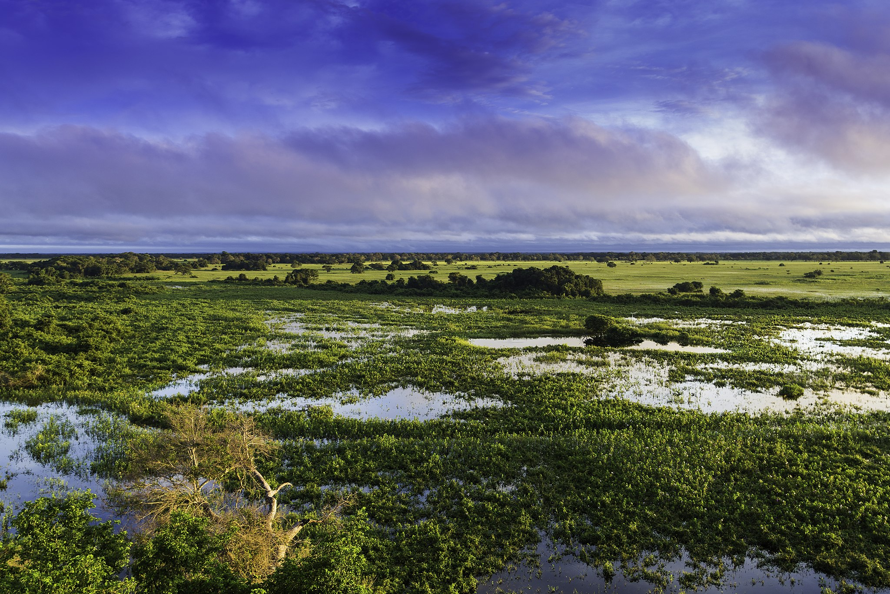
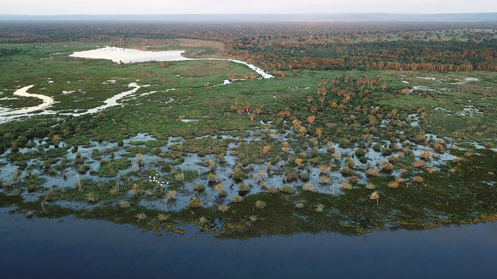
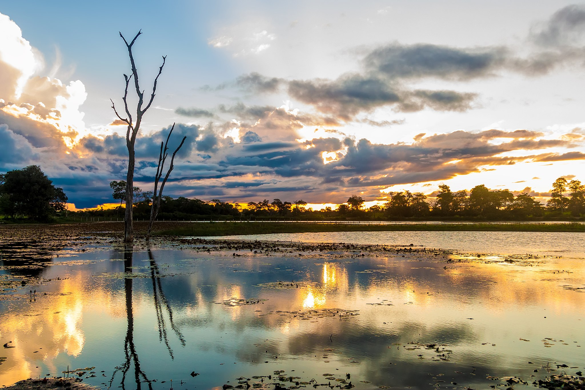
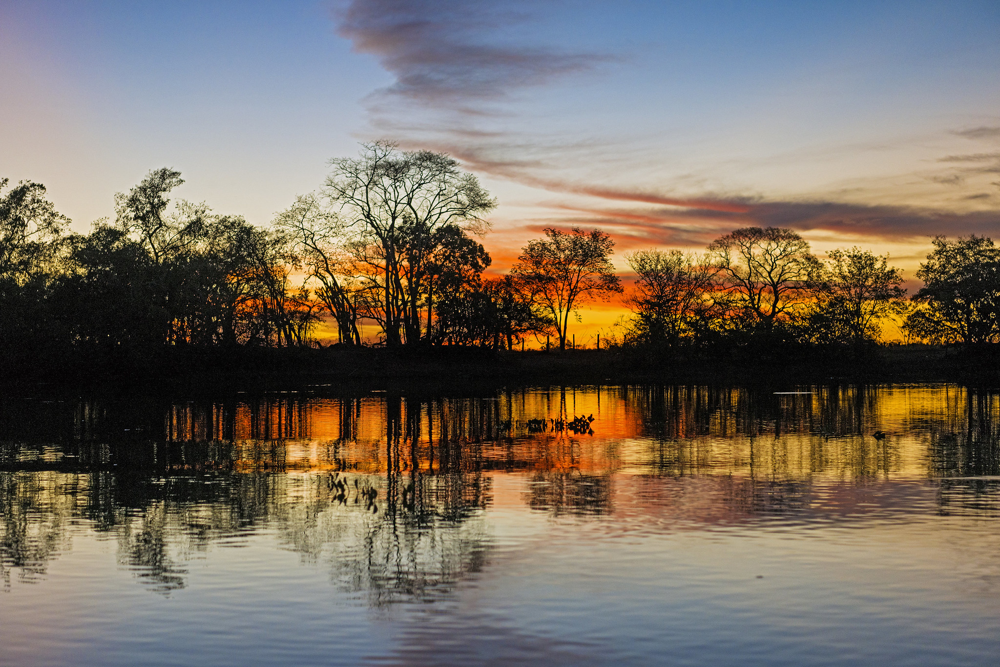
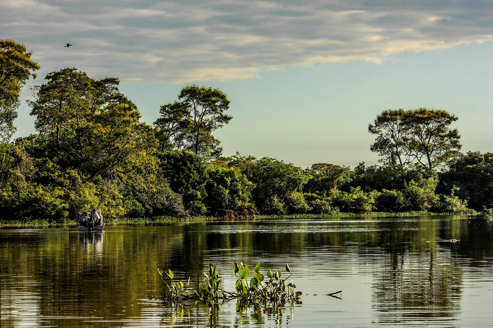

Pantanal






INFORMAÇÕES SOBRE O BIOMA
Área Total do Bioma
Sua área é de 210 000 km², com 65% de seu território no estado de Mato Grosso do Sul e 35% no Mato Grosso. A região se encontra dividida entre duas subdivisões: Microrregião do Alto Pantanal (em Mato Grosso) e Microrregião do Baixo Pantanal e Microrregião de Aquidauana (em Mato Grosso do Sul).Clima
- O clima é quente e úmido no verão, frio e seco no inverno. A maior parte dos solos do Pantanal é arenosa e suporta pastagens nativas, que servem de alimento para herbívoros da região e para o gado bovino, introduzido pelos colonizadores da área.
- Temperatura média: As médias anuais registradas, em torno de 25ºC, têm como mínima 15ºC e máxima 34ºC. A umidade relativa do ar fica em torno de 50% no inverno e 75% no verão.
- Precipitação: A precipitação pluvial média anual é de 1.100mm.
Relevo
- A planície é o tipo de relevo predominante no Pantanal. Quando a planície está alagada, no meio das águas podem ser vistas elevações arenosas, com até seis metros de altura. Estas elevações são conhecidas como cordilheiras. Cercando a planície existem alguns terrenos mais altos, como chapadas, serras e maciços.
Hidrografia
- O Pantanal pertence à bacia hidrográfica do Alto Paraguai e, por isso, é composto pelos seus planaltos. Ao todo, 180 rios integram a bacia, que desaguam nos principais afluentes do Pantanal, como o Paraguai, Cuiabá e Aquidauana.
Vegetação
- A vegetação do Pantanal é muito variada, principalmente em função da inundação e do solo. Geralmente distribuídas em mosaico, as principais paisagens são: Baías: lagoas temporárias ou permanentes de tamanho variado, podendo apresentar muitas espécies de plantas aquáticas emergentes, submersas, ou flutuantes.
Fauna
- Os animais mais conhecidos do Pantanal são o tuiuiú, a onça-pintada, o jacaré-do-pantanal, o tamanduá-bandeira, a arara-azul-grande, a ariranha, a sucuri-amarela, o cervo-do-pantanal, a surucucu-do-pantanal e o dourado. O tuiuiú é considerado a ave símbolo do Pantanal.
Visão Geral
- O Pantanal é um dos maiores e mais importantes biomas de áreas alagáveis do mundo, localizado principalmente no Brasil, mas também se estendendo por partes da Bolívia e do Paraguai. É uma região de vasta planície inundável, que abriga uma rica biodiversidade, sendo considerada um dos ecossistemas mais produtivos e diversificados do planeta. Durante a estação das chuvas, grandes áreas do Pantanal são cobertas por água, formando vastos campos alagados, o que favorece a formação de habitats únicos para uma variedade de espécies, incluindo jacarés, capivaras, onças-pintadas, aves como a tuiuiú e diversas espécies de peixes. Além da fauna impressionante, o bioma também é rico em flora, com árvores típicas de áreas alagadas e vegetação de campos inundáveis. Sua importância ecológica vai além da biodiversidade, sendo fundamental para o equilíbrio hídrico e climático da região, além de servir como um importante reservatório de carbono. O Pantanal, no entanto, enfrenta ameaças como o desmatamento, a expansão agrícola e as queimadas, que colocam em risco sua preservação.
Curiosidades
- Maior área alagável do mundo O Pantanal é o maior bioma de áreas alagáveis do planeta, cobrindo cerca de 150 mil km², com grande parte de sua extensão no Brasil, nos estados de Mato Grosso e Mato Grosso do Sul.
- Biodiversidade impressionante Estima-se que o Pantanal abriga mais de 1.100 espécies de aves, 400 espécies de peixes, 300 de mamíferos e 350 de répteis e anfíbios. Ele é considerado um dos biomas mais ricos em diversidade biológica do mundo, com muitos de seus habitantes únicos e endêmicos.
- Temporada das chuvas e secas Durante a estação das chuvas (de novembro a março), o Pantanal sofre alagamentos extensivos. Em contraste, na estação seca (de abril a outubro), as águas recuam, deixando vastas áreas de terra exposta. Esse ciclo é fundamental para a manutenção do ecossistema.
- O "Reino das Aves" O Pantanal é um paraíso para os observadores de aves. Entre as muitas espécies que habitam a região, uma das mais emblemáticas é o tuiuiú, uma garça símbolo do Pantanal e também a ave símbolo do estado de Mato Grosso do Sul.
- A onça-pintada do Pantanal O Pantanal é um dos melhores lugares do mundo para observar a onça-pintada (Panthera onca) em seu habitat natural. A região tem uma das maiores densidades dessa espécie, que é uma predadora chave no ecossistema.
- Riqueza hídrica O Pantanal é alimentado por vários rios e córregos, como o Rio Paraguai, que drena a água da região, formando um sistema complexo de drenagem que mantém o bioma inundado por longos períodos. Esse sistema de alagamento e drenagem é vital para a fertilização do solo e o ciclo de vida de muitas espécies.
- Pesca e culinária A pesca é uma atividade tradicional no Pantanal, e o pintado, surubim e pacú são alguns dos peixes mais comuns na culinária local. A gastronomia pantaneira também é rica em pratos como o arroz com pequi e o churrasco de peixe.
- Pântano ou Pantanal? O nome "Pantanal" vem do termo espanhol "pantan" (pântano). Apesar do nome sugerir uma área com solo permanentemente alagado, o Pantanal é, na verdade, um ecossistema dinâmico, com áreas secas e inundadas, conforme o ciclo das chuvas.
- Queimadas O Pantanal é frequentemente afetado por queimadas, especialmente durante a estação seca. Essas queimadas naturais são parte do ciclo ecológico, mas quando exacerbadas pela ação humana, elas podem causar danos graves à vegetação e à fauna local.
- Mestre das águas O Pantanal é conhecido por ser o "mestre das águas" devido à sua capacidade única de armazenar e distribuir grandes volumes de água, que têm um impacto profundo nas comunidades e nos ecossistemas ribeirinhos e adjacentes.


Exemplo de Vegetação do Pantanal
/i.s3.glbimg.com/v1/AUTH_59edd422c0c84a879bd37670ae4f538a/internal_photos/bs/2019/M/A/fyfXaJSnmPaWWBTAfgBg/cf68d17b-bc7b-40f0-aebc-464478127d6c.jpg)
Exemplo de Vegetação do Pantanal

Tuiuiú

Onça-Pintada

Ariranha